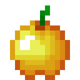

Golden Apple

Description
Golden Apples are the second-most beneficial food item in Minecraft (second only to the Enchanted Golden Apple).
Ingredients
Steps
-
Add gold bars to all of your crafting table, expect from the middle one
-
Add an apple on the center of your crafting table